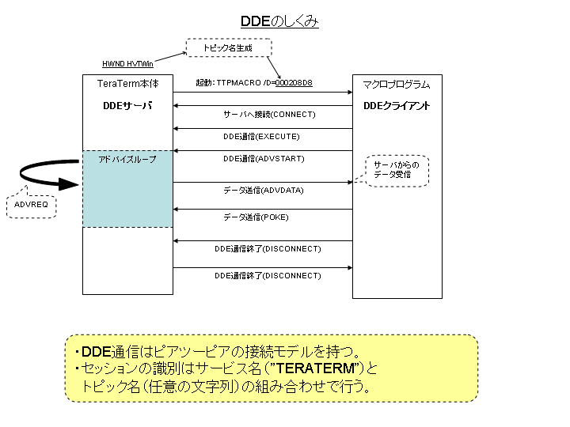

TeraTermソースコード解説
本文書では、TeraTermのソースコードについて解説をします。解説対象とするソースコードはバージョン"4.58"（2008年2月現在）のものをベースとしています。
TeraTermのパッケージに含まれるほとんどのプログラムは、C言語で記述されています。一部のコードはC++言語で、MFC(Microsoft Foundation Class)が利用されています。Windows特有の処理を行うために、Win32 APIが多用されているため、APIの知識が必要となってきます。
ソースコードをビルドするためには、Microsoft Visual Studio 2005 Standard Edition以上が必要です。Express EditionではMFCが利用できないため、ビルドができません。また、C++BuilderやTurbo C++ Explorer、gccなどのコンパイラにおいても、ビルドすることはできません。
Windowsプログラミングに関する情報の源は、Microsoftが提供する「MSDNライブラリ」にあります。開発を行う際は、MSDNライブラリを頻繁に参照することになります。
ただし、CygTermのみはCygwinのgccでコンパイルをします。ゆえに、CygTermはgccの機能を使った実装になっています。言語はC++です。
TeraTermのメインエンジンはC++で実装されていますが、C言語的なコーディングがなされているため、TeraTermのソースコードを読み解くには、C言語に関する基礎知識があれば問題ないと言えます。ただし、Microsoft Visual C++(VC++)はANSI C準拠(C89)とはいえ、C99には未対応であるために、本来のC99相当の機能が独自に拡張されている部分もあります。そうした独自拡張された関数には、頭文字にアンダースコア(_)が付いているために、区別が付けやすくなっています。たとえば、VC++の_snprintf()は、ANSI C(C99)のsnprintf()とは似て非なるものです。
TeraTermパッケージに含まれる実行モジュール（.exeと.dll）の関連図を以下に示します。実行ファイルの拡張子は".exe"になっており、必要に応じてDLLが動的リンクされます。いずれも32ビットプログラム(x86)であるために、x86-64やIA-64といった64ビット環境ではそのまま動作するかどうかは評価されていません。
通常、ユーザがデスクトップやスタートメニューからアプリケーションを起動するときに、呼び出される実行ファイルは"ttermpro.exe"になります。実行ファイルはさらに5つのDLLとダイナミックリンクしています。静的リンクを行い、単一のEXEファイルにしていないのは、1つのプロセスのメモリ占有率を抑えるためです。TeraTermでは多数の起動が行われることが想定されるため、初期設計段階からDLLに分割されています。一度読み込まれたDLLは、複数のプロセス間で共有することができます。
マクロスクリプトを実行する際は、"ttpmacro.exe"というまったく別のプロセスが呼び出されます。"ttermpro.exe"とプロセス単位で分けられているのは、マクロを単体で実行できるようにするためです。両プロセス間で、データのやりとりを行うためには、プロセス間通信が必要です。TeraTermでは、DDE(Dynamic Data Exchange)と呼ばれる現在ではレガシーとなってしまったしくみが採用されています。将来のWindowsではDDEがサポートされなくなる可能性があり、その場合TeraTerm上でマクロを実行することは一切できなくなります。
TTSSHやTTProxy、TTXKanjiMenuといったプラグイン形式のDLLは、TeraTermの起動時に明示的に LoadLibrary() を使ってダイナミックロードされます。ロード対象となるDLLのファイル名は、TTXInit()#ttplug.c において、"TTX*.DLL"というパターンにマッチしたものとなります。
"keycode.exe"と"ttpmenu.exe"、"LogMeTT.exe"は単体アプリケーションです。
Cygwin接続のしくみについては、別の節で説明します。
高度な機能を実現するために、フルスクラッチで実装することは効率がいいとは言えません。TeraTermでは開発効率化を図るために、オープンソースのライブラリを積極的に利用しています。ただし、オープンソース製品のライセンスによる競合には注意を払う必要があります（特にGPL）。
下図に、オープンソースのライブラリをリンクしているモジュールと、そのリンク状況を示します。TeraTermマクロプログラムにおいて、"waitregex"や"sprintf"コマンドにおいて正規表現を利用するために、Onigurumaと呼ばれる正規表現ライブラリをリンクしています。TeraTerm本体では、バージョンダイアログにOnigurumaのバージョンを表示するためだけにリンクをしています。
SSHモジュールである"TTSSH"は、暗号処理を行うためにOpenSSLを利用しています。"OpenSSL"というネーミングからWebアクセスに使われるSSL(Secure Socket Layer)プロトコル専用のライブラリかと思われがちですが、基本的な暗号アルゴリズムをサポートしていることから、TTSSHではOpenSSLに含まれる低レイヤのルーチンを利用するだけに留まっています。このことは、すなわちOpenSSLライブラリにセキュリティホールが発見されたとしても、TTSSHへの影響は極めて低いということです。
zlibライブラリは、SSHパケットの圧縮を行うために利用しています。ただし、ダイヤルアップ回線などの低速度なネットワークにおいては、パケット圧縮は有効ですが、昨今の高速回線ではむしろ速度低下を招く足かせとなります。ゆえに、デフォルトではパケット圧縮機能は無効化されています。
PuTTYは世界標準であるフリーのターミナルエミュレータです。PuTTYに含まれるPageantと呼ばれるSSH認証エージェントがあるのですが、TTSSHでPageantによる公開鍵認証をサポートするために、PuTTYのソースコードを利用しています。
なお、いずれのライブラリも静的リンク(static link)としています。ライブラリのコンパイルオプションには"/MT"を付加しています。動的リンク(dynamic link)を行うと、一部のユーザ環境でTeraTermが起動できないという現象が発生したために、現在では動的リンクは行っていません。
プラグインサポート
設定ファイルの読み書き
Windowsではアプリケーションのデータ保存のために、レジストリが伝統的に利用されていますが、TeraTermではその誕生がWindows 3.1までに遡るために、.iniファイルによるローカルディレクトリへの保存方法が標準となっています。
パッケージに同梱されるCollectorやLogMeTT、CygTermに関してもローカルディレクトリへデータが保存されます。
例外として、TeraTerm Menuはデフォルトでレジストリへ保存をします。カレントディレクトリに"ttpmenu.ini"（0バイトで可）を設置することで、レジストリの代わりに.iniファイルを使うようにすることもできます。
teraterm.iniファイルにエントリを追加した場合は、ReadIniFile()#ttset.cに設定を読み込みするようにします。
ts->ConfirmChangePaste =
GetOnOff(Section, "ConfirmChangePaste", FName, TRUE);
WriteIniFile()#ttset.c に設定を書き込みするようにします。
WriteOnOff(Section, "ConfirmChangePaste", FName,
ts->ConfirmChangePaste);
エントリに文字列を設定する場合は、Win32APIのGetPrivateProfileString()とWritePrivateProfileString()を使います。数値を扱いたい場合は、GetPrivateProfileInt()とWriteInt()を使います。
セキュアプログラミング
WindowsのデフォルトアカウントはAdministrator権限を保持するために（ただし、Windows Vistaには当てはまらない）、アプリケーションにバッファオーバーフローの不具合があると、管理者権限を第三者に奪取されてしまう危険性があります。
従来、C言語の文字列処理は開発者のミスにより、バッファオーバーフローが発生しやすいという状況にありました。そこで、MicrosoftはVisual Studio 2005から文字列処理関数のセキュリティ強化バージョンを提供するようになりました。
TeraTermではセキュリティ強化を図るため、文字列操作のほとんどをセキュリティ強化バージョンに置き換えています。以下に代替関数を示します。
| 旧 |
新 |
| sprintf(), _snprintf() |
_snprintf_s() |
| strcat(), strncat() |
strncat_s() |
| strcpy(), strncpy() |
strncpy_s() |
デフォルトのロケールが適用されると、期待する動作とならないケースにおいては、_snprintf_s_l()を使用しています。
いずれの関数においても、_s("secure")という接尾辞が付くため、見た目に区別が付きやすくなっています。当然のことながら、これらの関数はANSI C非互換です。
なお、これらの関数を利用する際、Count引数（格納する最大文字数）には"_TRUNCATE"マクロを指定しており、バッファオーバーフローが発生する場合は、強制的にバッファの切り詰めを行っています。
古いバージョンのWindowsとの互換性維持
デバッグ手法
DDEによるプロセス間通信
概要
DDE(Dynamic Data Exchange)の誕生は、1987年のWindows 2.0までに遡ります。DDEはプロセス間通信を行うためのしくみですが、現在ではレガシーな方式であり、ほとんどのアプリケーションでは利用されていません。Windowsにおけるプロセス間通信といえば、メールスロットや名前付きパイプ、OLEなどが定番です。
かつては、DDEによるプロセス間の通信データをキャプチャすることができる「DDEスパイ」(DDESPY.EXE)というツールがVisual Studioに付属していましたが、現在のVisual Studioにはもはや含まれていません。
DDEに関するリファレンスはMSDNライブラリから参照することができます。
DDEは、TCPによるネットワーク通信と似ており、サーバとクライアント間を一対一で接続し、通信を行います。アプリケーションがDDEによる通信を行うために、DDEML(Dynamic Data Exchange Management Library)と呼ばれるライブラリをWin32 APIとして提供されています。
DDE通信を行うために、一方がサーバとなり、他方がクライアントになる必要があります。また、通信のセッションをシステム全体でユニークとするために、識別情報が必要です。TCP通信ではIPアドレスとポート番号が使われますが、DDE通信では「サービス名」と「トピック名」の組み合わせが使われます。TeraTermではサービス名は"TERATERM"という文字列が使われ、トピック名はTeraTerm本体のウィンドウハンドル(HVTWin)の16進数値を文字列化したものが使われています。
このようなしくみになっているために、マクロスクリプトからまったく別のTeraTermへコマンドを送ることはできません。

上図に示すように、TeraTerm本体("ttermpro.exe")がDDEサーバとなり、マクロプログラム("ttpmacro.exe")がDDEクライアントとなります。DDEでは、やりとりするデータの塊のことを「トランザクション」と呼びます。トランザクションには以下に示すような何種類かがあります。タイプは"ddeml.h"でマクロ定義されています。
| タイプ |
意味 |
| XTYP_ADVREQ |
DDEサーバがクライアントへデータを送るために、DDEサーバが自分自身に送るメッセージ。 |
| XTYP_POKE |
DDEクライアントからサーバへデータを送る。 |
| XTYP_ADVSTART |
DDEサーバに対してアドバイスループの開始を指示する。 |
| XTYP_ADVDATA |
DDEクライアントにデータを定期的に送る。 |
| XTYP_EXECUTE |
DDEサーバに文字列を送り、何らかの処理をサーバに指示する。 |
ライブラリ
設計と実装
バッファの管理